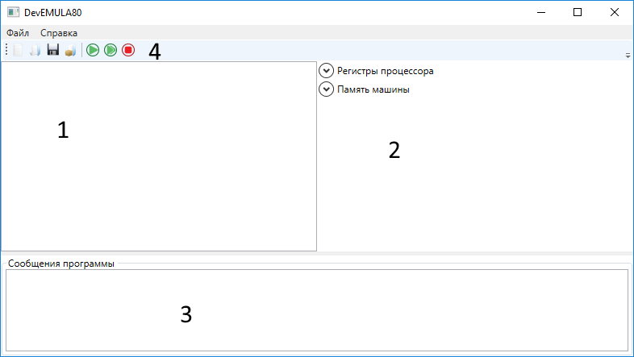

Emula80 - интерактивный интерпретатор ассемблера c intel-подобным синтаксисом
предназначенный для обучения и ознакомления с главными принципами программирования
на языках ассемблера. Подмножество языка ассемблера представленного в данной
программе является полным поТьюрингу.
Что умеет Emula80?
Emula80 - представляет собой приложение предоставляющее
интерактивную оболочку для программирования на
подмножестве команд ассемблера (c кодовым именем EmuLang). Главной
особенностью программы является способность отображать
состояние регистров виртуального процессора и памяти
виртуальной машины на которой выполняется программа.
Так же местная реализация ассемблера может допускать
нескольких вариантов написания инструкций (что несколько
ослабляет требования к правильности написания синтаксиса)
и позволяет сконцентрироваться на обучении.
Ограничения Emula80
Несмотря на цель создать максимально правдоподобный аналог
ассемблера, в Emula80 содержится несколько ограничений
наложенных с целью упростить внутреннею реализацию, а также
внешний интерфейс программы. Так в Emula80 поддерживается
только один тип данных (int32). Все регистры моделируемого
процессора и ячейки памяти виртуальной машины так же
имеют этот тип данных. Так же подмножество языка было
урезано до команд арифметики, операций с регистрами,
определения процедур, операций с памятью. Многие команды
из множества команд процессоров семейства x86-x64
в данном приложении не доступны, что позволяет
использовать Emula80 только в учебных целях.
Реализация ассемблера в данном приложении не требует особых
требований к структуризации программ на EmuLang. Синтаксический
анализатор реализованный является плоским и считывает информацию
последовательно, игнорируя знаки пробелов (кроме тех случаев когда
они разделяют лексемы), а так же запятые и символы перевода каретки.
Практически это означает что можно написать корректную программу в
одну строку без специальных символов-разделителей.
Главным требованием синтаксиса является что бы каждое значимое
выражение начиналось с оператора.
Как можно увидеть в данном примере, разбивать программу на строки
строго не обязательно, так же необязательно отделять аргументы
операторов запятой.
Особенности Работы
Текст программы разбивается на лексемы, затем каждой лексеме
присваивается номер. Этот номер будет адресом данной лексемы.
По этому адресу можно переходить с помощью регистра IAR.
Однако надо быть острожным, так как "не операторы" тоже имеют свой
адресс и интерпретатор выдаст ошибку при попытке выполнить "EAX" или
другую подобную "не инструкцию".
Система команд
EmuLang реализует маленькое подмножество команд семейства
x86-x64 в которое вошли базовые команды этого семейства
процессоров.
Обозначения
[REG] - Имя регистра
[data] - информация в виде числа формата int32
[MEM] - номер ячейки памяти в виде числа формата int32
[Label] - текстовая метка в коде программы
Команды и примеры
1 | LOAD [REG] [MEM] - Загружает данные из памяти в регистр
2 | STORE [REG] [MEM] - Ложит данные из регистра в ячейку памяти
3 | PUSH [REG] - заталкивает данные в стек
4 | POP [REG] - выталкивает данные из стека
5 | ADD [REG] [REG] - складывает данные
6 | ADD [REG] [DATA] - складывает данные
7 | SUB [REG] [REG] - вычитает
8 | SUB [REG] [DATA] - вычитает
9 | MUL [REG] [REG] - умножает
10| MUL [REG] [DATA] - умножает
11| DIV [REG] [REG] - делит
12| DIV [REG] [DATA] - делит
13| EXCH [REG] [REG] - обменивает содержимое регистров
14| JMP [LABEL] - безусловный прыжок
15| JGT [LABEL] - прыжок (если больше)
16| JLT [LABEL] - прыжок (если меньше)
17| JEQ [LABEL] - прыжок (если равно)
18| CMP [REG] [REG] - сравнение
19| MOV [REG] [DATA] - присваивание
20| MOV [REG] [REG] - присваивание
21| PROC [LABEL] - объявление процедуры
22| ENDPROC - конец объявления процедуры
23| CALL [LABEL] - вызов процедуры по имени
24| LABEL: - метка в коде программы
Регистры и их назначение
Регистры общего назначения
Могут быть использованы для любых операций над регистрами
EAX
EBX
ECX
EDX
EFX
EGX
ESX
EPX - регистр общего назначения, но хранит адрес вершины стека
Регистры специального назначения
Используются для хранения специальной информации, хотя они и
доступны для изменения, не рекомендуется их изменять, если
программист не может предвидеть результата.
DRF - Флаг отладки = 1 если программа выполняется пошагово
RET - Содержит номер инструкции* для возврата из процедуры
STE - Адрес конца стека
CRF - Флаговый регистр сравнения
Интерактивная оболочка
Интерактивная оболочка предназначена для программирования и интерактивного
отслеживания информации. Программа имеет одно главное окно поделенное на
следующие области.

Элемент текстового ввода, для программного кода. Именно тут будет размещаться
код программы
Здесь отображается информация о регистрах и памяти виртуальной машины
Здесь выводятся сообщения от интерпретатора
Панель инструментов - манипуляции с файлами, и не посредственно с исполнением программы